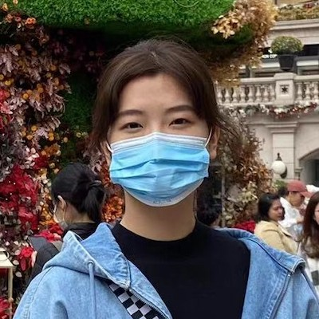

Lap Hin Lau, Jeff (劉立軒), MSc Student (2021-)
I am an undergraduate from architectural studies and postgraduate from geomatics with a solid understand of building information modelling (BIM) and geographic information systems (GIS). People always say I am capable, enthusiastic, and dependable team players, both in working and studying. My research interest is urban modelling with BIM and GIS, to facilitate the popularity of urban informatics in the world.
Cheuk Wing Leung, Janice (梁卓穎), MSc Student (2021-)
Janice Leung is a graduate from the University of British Columbia with a B.A. in Geography (Environment & Sustainability), where she first discovered GIS and its vast potential. Eager to learn more, Janice decided to further her education at the British Columbia Institute of Technology in the GIS advanced diploma program and at the Hong Kong Polytechnic University in the MSc in Geomatics program. Her GIS passion lies in analyzing urban data through machine learning, particularly within the realms of buildings and transportation. Her current postgraduate research focus is on building age estimation with machine learning. Outside of GIS, Janice enjoys dancing, hiking and exploring the beautiful backcountry of Hong Kong.
Biyunfei Yang (杨碧云飞), MSc Student (2021-)
Yang is currently a MSc student in the Department of Land Surveying and Geo-informatics at the Hong Kong Polytechnic University. She received her Bachelor's degree from Zhongnan University of Economics and Law in 2018 and her Bachelor's degree in Management from Wuhan University in the same year. Her research interests are in urban informatics and high precision mapping in autonomous driving.
Sifan Yang (杨司凡), MSc Student (2021-)
I got my bachelor degree from Michigan State University, and I am currently focusing on local climate zone classification of Hong Kong. I love swimming and hiking.
Qiaohua Zhou (周巧华), MSc Student (2021-)
ZHOU Qiaohua is now a MSc student in Urban Informatics and Smart Cities, at the Department of Land Surveying and Geo-Informatics, The Hong Kong Polytechnic University. Her research interests are smart city, Geo big data and GeoAI.

Baodi Guo (郭宝迪), MSc Student (2022-)
I am currently major in urban informatics and smart cities as a postgraduate student at The Hong Kong Polytechnic University. I received my Bachelor degree from Henan Agriculture University. After graduation, I spend two years in British Columbia Institute of Technology. My research interests are including urban planning, regional analysis and smart cities. In my leisure time, I love drawing and watching videos on human geography and history.
Cai Liao (廖偲), Research Assistant (2022-)
I'm currently studying at the School of Geodesy and Geomatics of Wuhan University in my first year of postgraduate study. I majored in Cartography and Geographic Information Engineering, and game simulation is my research interest. In daily life, I like listening to light music, watching anime, running, and can play a little table tennis and badminton.
Kwan Chi Whoo, Benny (胡鈞捷), MSc Student (2022-)
Benny
Alumni
Sinuo Dong (董思挪), MSc Student (Graduated in 2021)
On Tat Lau, Roy (劉安達), MSc Student (Graduated in 2021)
Chi Kwan Liu, Eric (廖子鈞), MSc Student (Graduated in 2021)